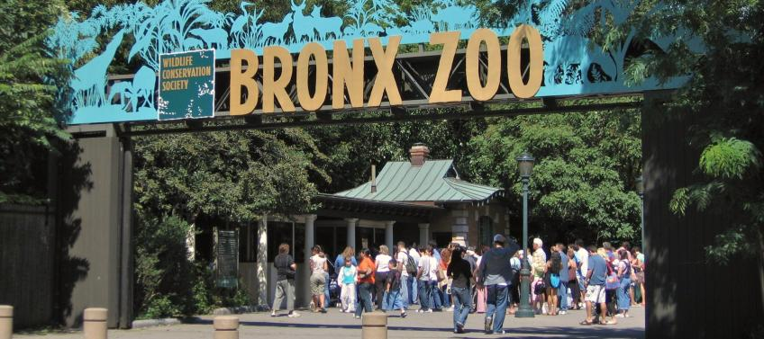
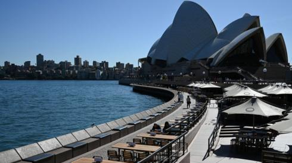
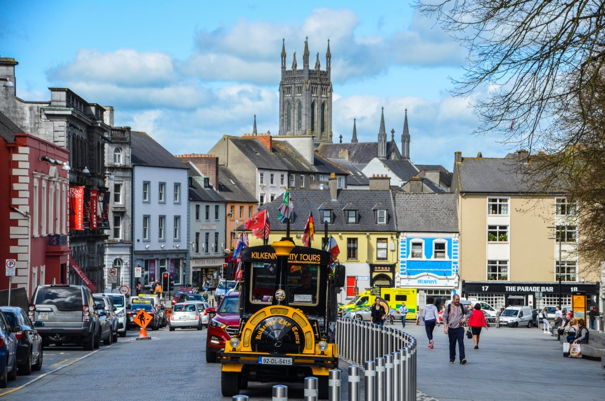
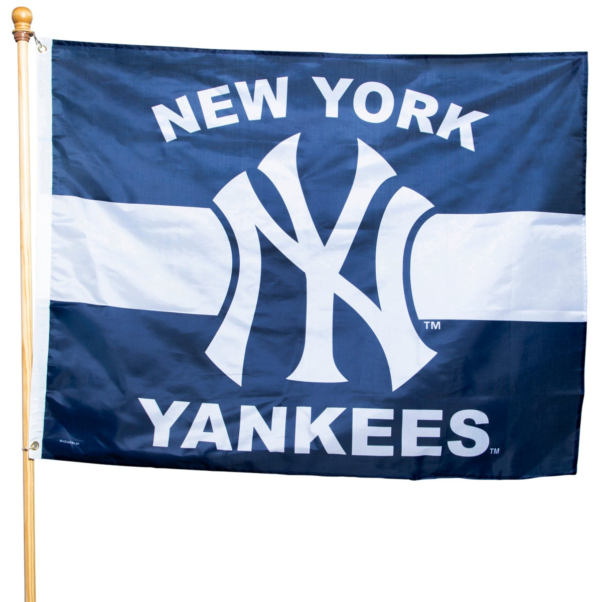
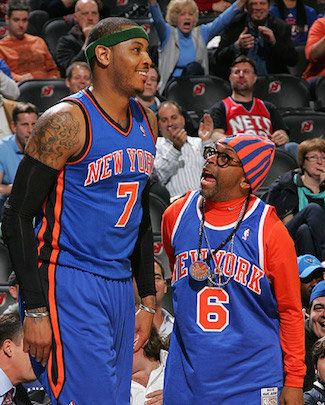
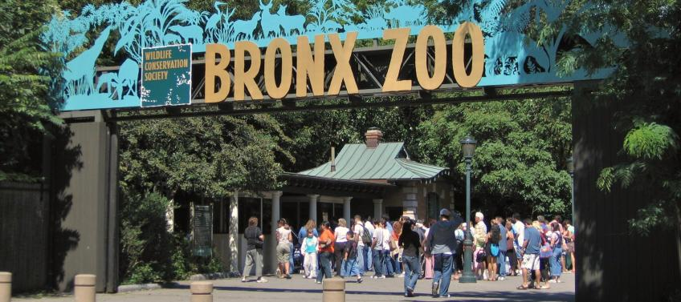
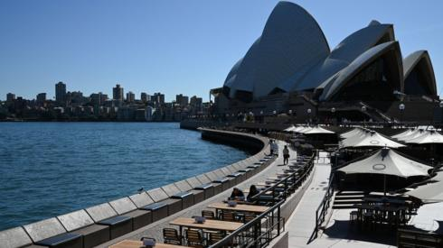
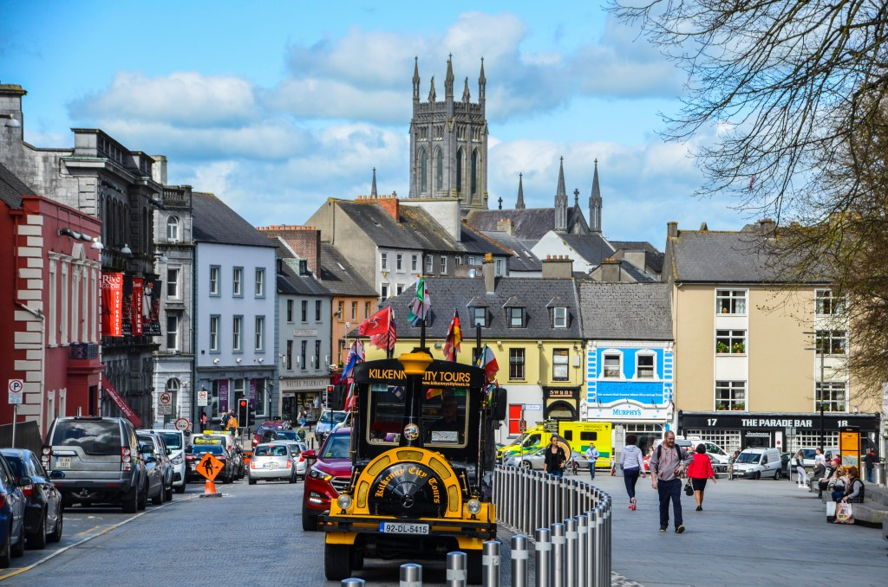
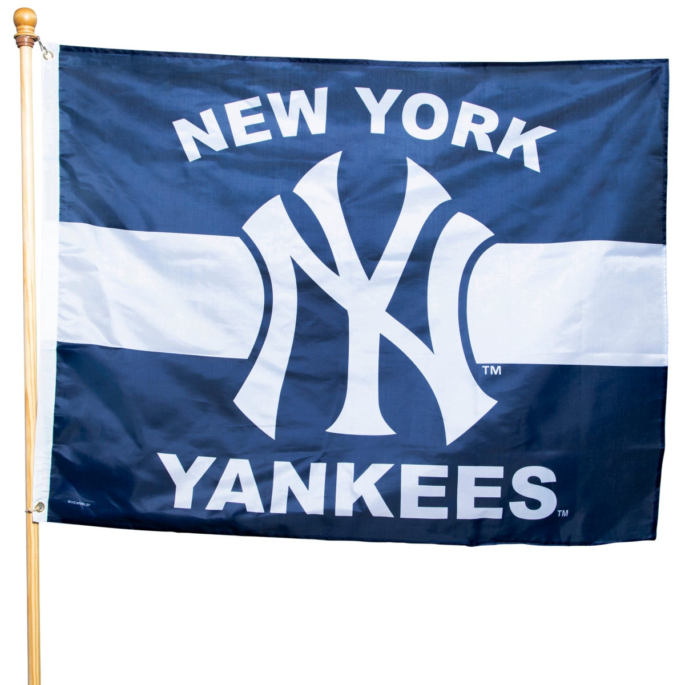
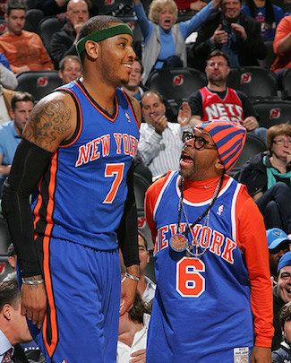

Sports and Travel
 









"I was born and raised in the South Bronx, which is a borough in New York City. The Bronx zoo is rumored to be one of the biggest zoo's in the world. I lived only a 15 minute walk away and my family and I visited many times. The Bronx was a dangerous place to live in the 80's and the 90's and has only gotten and little safer over the years. However, this was my home and their were so many good people there and I have many fond memories.
When I decided I would start my travels, (actually living abroad and not just visiting) my first stop was in Paris. I did not have a Visa, but was still offered work after only 2 weeks of being in the country. Although I was tempted, I was afraid of the language barrier. I spoke no more French than a common greeting. Also, Paris was devastatingly expensive, and that says a lot coming from a New Yorker. So with a heavy heart, I moved on to Australia.
After living in a Hostel on the beach in Sydney for a few weeks, I managed to find a house with a few other people and find work in no time. People were very friendly and open. I loved it there. My only complaint is the bugs. They were everywhere and many were lethal. As a city girl, I just could not get passed it. After 6 months, my boyfriend at the time proposed and I was off to Ireland to meet the family
What was only supposed to be a short visit to Kilkenny, turned into a 9 year stay. After the first 6 years I decided to return to education, and here we are...
I have never much followed sports however, I cannot deny a sense of pride when referring to the New York Yankees. The stadium was also very close to where I grew up and the Yankees are one of the best teams in the leauge to date. The Knicks do not share the same prestige, but are also a beloved team back home.